Manipulación de elementos HTML
Modificación y obtención de elementos HTML
Se tratan de todos aquellos métodos utilizados para obtener elementos HTML y el texto de estos.
Para ejemplificar adecuadamente estos métodos los ejemplos empleados partirán desde este código HTML
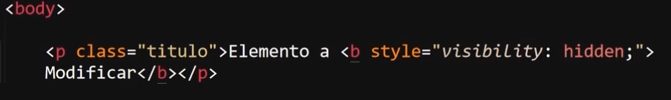
TextContent()
-
Devuelve el texto de cualquier nodo, es decir este método retorna todo el texto contenido dentro de un elemento, incluyendo el que se encuentre dentro de elementos hijos, sin tener en cuenta las etiquetas HTML ni tampoco a los estilos CSS de los elementos.
Ejemplo
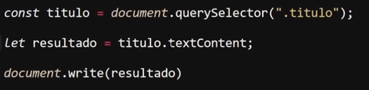
Resultado
En este ejemplo el elemento HTML en cuestión posee definido el atributo "style", con la propiedad "visibility" con un valor "hidden", lo que significa que el elemento tiene definido una propiedad CSS que oculta el elemento de la vista del usuario, sin embargo nada de esto es tomado en cuenta por el método "textContent", por lo que todo el texto del elemento es retornado por este, y posteriormente impreso en pantalla.
InnerText
-
Devuelve el texto visible de cualquier "node element".
Este método está en desuso y no se recomienda emplearlo, sin embargo la importancia de conocerlo radica en que es posible que se le encuentre en el código antiguo.
Ejemplo
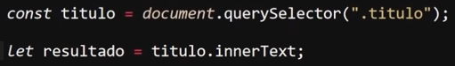
OuterText
-
Devuelve el texto de las etiquetas HTML (incluidas las etiquetas).
Este método está en desuso y no se recomienda emplearlo, sin embargo la importancia de conocerlo radica en que es posible que se le encuentre en el código antiguo.
Ejemplo
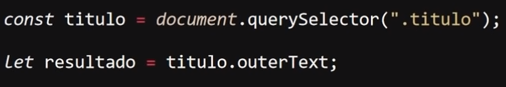
innerHTML
-
Este método permite retornar todo el contenido HTML, incluyendo las etiquetas de este.
Ejemplo
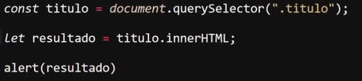
Resultado
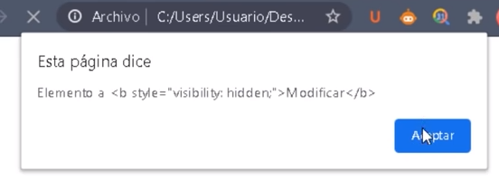
outerHTML
-
Este método permite retornar todo el elemento HTML, incluyendo las etiquetas y los atributos de estas.
Ejemplo
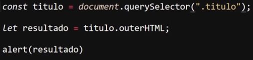
Resultado
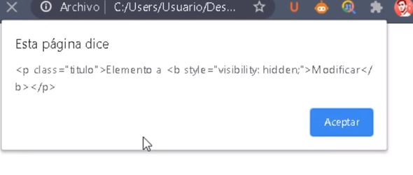
Creación de elementos HTML
En esta sección se definen todos los métodos empleados para generar elementos HTML desde JavaScript, para ejemplificarlos adecuadamente los ejemplos se realizarán en base al siguiente código HTML:
CreateElement()
-
Este método permite generar un elemento HTML
Nota: Este método es sensible a las mayúsculas, de hecho la forma en la que este reconoce a los elementos HTML que se le indiquen es con todos los caracteres en mayúsculas.
Ejemplo
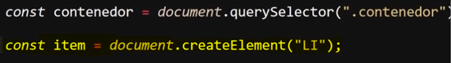
Resultado
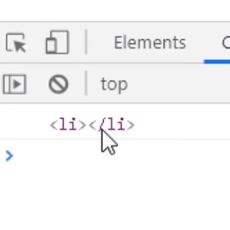
En este ejemplo se muestra el elemento "li" generado con la propiedad "createElement" en la consola.
CreateTextNode()
-
Este método permite generar un Objeto de texto de nodo, es decir un texto HTML, pero que en cuanto a JavaScript concierne este elemento es un objeto, por lo tanto estos elementos pueden acceder a las mismas propiedades que las de un objeto común.
Ejemplo
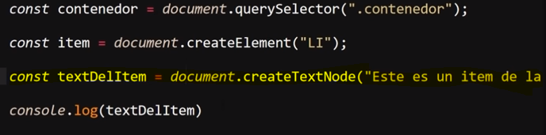
Resultado
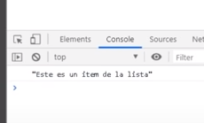
En este ejemplo se almacena un texto generado con el método "createTextNode" en una variable con el nombre "textDelItem", y luego se muestra el contenido de esta variable en la consola.
Introducir un Elemento Dentro de Otro
-
Para esto existen dos formas las cuales varían según si el elemento hijo se trata de un texto u otro elemento HTML.
-
La forma de introducir un texto dentro de un elemento contenedor es simple, se trata de utilizar las propiedades de obtención de elementos para introducir el texto dentro de un elemento padre.
Ejemplo
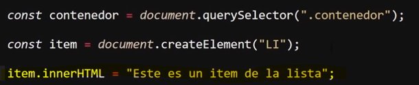
-
Para introducir cualquier otro tipo de texto HTML (incluyendo texto si se desea) se usa el método appendChild, el cual se especializa en definir un elemento como hijo de otro.
Introducir Muchos Elementos dentro de un Elemento Padre
-
Generar e introducir elementos hijos con JavaScript aunque no lo parezca es un proceso que consume una cantidad de recursos considerable, y esto se agrava en aquellas ocasiones en las que sea necesario definir muchos de estos, ya que para estos casos la mejor estructura es un ciclo "for", sin embargo al definir grandes cantidades de elementos se genera un consumo que puede llegar a ser excesivo de recursos.
Para estos casos se desarrolló el método "createDocumentFragment" el cual soluciona estos problemas de recursos, ya que gestiona la forma en la que los navegadores imprimen los elementos en pantalla, y lo optimiza para las ocasiones en las que sea necesario imprimir una gran cantidad de elementos.
Ejemplo
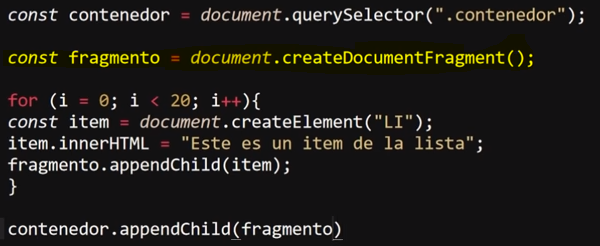
Resultado
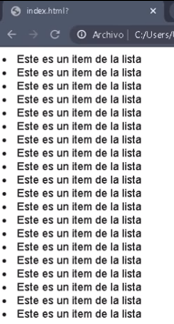
En este ejemplo a un elemento padre llamado "contenedor" se le desea añadir una lista de 20 elementos hijos, dentro del ciclo "for" se define los elementos que serán añadidos, pero estos son almacenados en una variable particular llamada "fragmento", lo que hace distintiva a esta variable es que anteriormente se le aplicó el método "createDocumentFragment", lo que permite que esta variable esté optimizada para imprimir múltiples elementos en pantalla, de ese modo cada vez que el ciclo "for" realice un recorrido la variable permitirá manipular estos elementos sin generar un consumo excesivo de recursos.
Obtención y Manipulación de Elementos Childs (Hijos)
Se tratan de todas las propiedades que se aplican para manipular elementos hijos, para ejemplificarlas adecuadamente los ejemplos de estas propiedades se basarán en este código HTML:
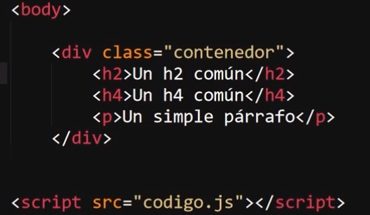
Nota: En JavaScript, un nodo se refiere a una entidad dentro del árbol del DOM (Document Object Model), que representa un elemento o parte de la estructura de una página web.
FirstChild
-
Esta propiedad permite el retornar el primer valor almacenado dentro de un contenedor, en esta propiedad es necesario hacer hincapié en "valor", ya que lo que esta propiedad retorna no es el primer elemento, sino en su lugar retorna el primer nodo que se encuentre dentro del contenedor, el cual la mayoría de las veces se trata de un nodo de tipo texto.
Ejemplo
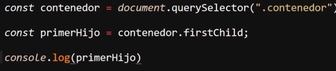
Resultado
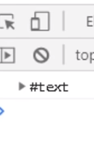
En este ejemplo se aplica la propiedad "firstChild" al elemento contenedor, lo cual retorna un nodo de tipo texto en consola.
Esto ocurre ya que los espacios y los saltos de línea son considerados como caracteres de texto, por ello al aplicarlos en el código del documento para mantener la semántica estos son los primeros valores encontrados por la propiedad, he allí la razón de que sean retornados:
Ejemplo
Para lograr que esta propiedad retorne elementos HTML es necesario definir las etiquetas del primer elemento dentro de las etiquetas del elemento contenedor sin ningún salto de línea o espacio que separe las etiquetas del elemento hijo del elemento padre.
Ejemplo
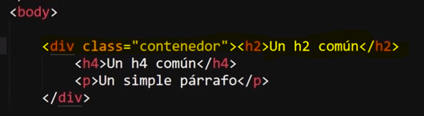
Resultado
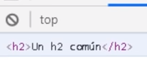
LastChild
-
Esta propiedad es exactamente igual a la anterior con la única diferencia de que esta retorna el último valor, no el primero, por todo lo demás es igual, incluyendo el hecho de retornar el nodo de texto correspondiente a los saltos de línea o espacios, ya que son los últimos nodos contenidos por el elemento padre, por lo tanto para que esta propiedad retorne elementos HTML es necesario cerrar las etiquetas del elemento hijo justo antes de las del elemento padre, de ese modo los últimos nodos corresponderán al elemento hijo.
Código JavaScript
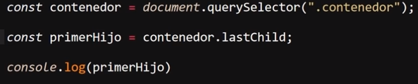
Ejemplo con Semántica
Resultado
Ejemplo Etiquetas Pegadas
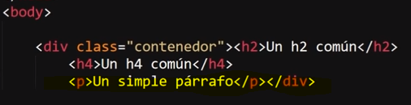
Resultado
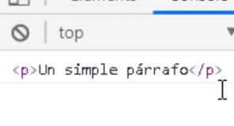
FirstElementChild
-
Esta propiedad retorna el primer elemento almacenado dentro del elemento padre; por lo tanto, a diferencia de "firstChild", esta propiedad ignora por completo los nodos de espacios y saltos de línea, retornando únicamente el primer elemento dentro del contenedor.
HTML
JavaScript
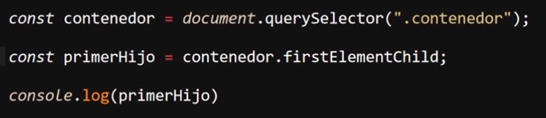
Resultado
LastElementChild
-
Esta propiedad es exactamente igual a la anterior con la única diferencia de que esta retorna el último elemento, no el primero.
HTML
JavaScript
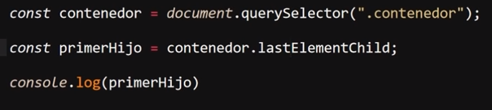
Resultado
ChildNodes
-
Esta propiedad retorna todos los nodos almacenados dentro del elemento padre, y lo hace en un elemento de tipo "NodeList" (se recorre como un array con la propiedad "forEach", pero no puede usar las propiedades de estos, ya que es un objeto); por lo tanto, esta propiedad permite retornar todos los nodos sin importar si se trata de nodos de etiquetas o de semántica.
Ejemplo
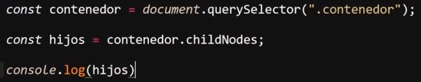
Resultado
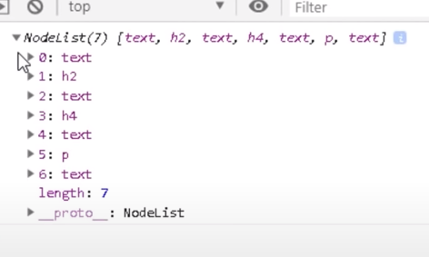
Children
-
Esta propiedad es muy similar a la anterior; sin embargo, se diferencia en que esta únicamente retorna los nodos que pertenezcan a elementos HTML. Por lo tanto, esta propiedad retorna un listado de todos los elementos hijos de un elemento padre, y lo hace en formato "HTMLCollection" (se puede recorrer con un bucle "for of", ya que de otra forma no se puede recorrer).
Ejemplo
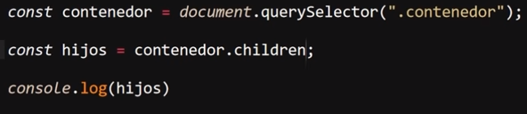
Resultado
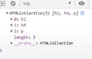
Métodos de Childs
appendChild()
-
Este método permite definir que un elemento será el hijo de otro; por lo tanto, se podría decir que este método permite introducir un elemento HTML dentro de otro.
Para hacerlo, este método debe aplicarse a la variable que almacena al elemento "padre"; a su vez, este método recibe un valor, el cual corresponde a la variable que almacena al elemento "hijo".
Ejemplo
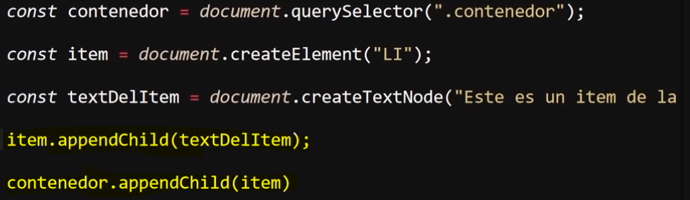
Resultado
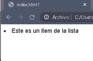
En este ejemplo el código HTML únicamente posee un elemento contenedor "div". Se usa el método "createElement" para generar un contenedor de tipo "li", y el método "createTextNode" para generar un objeto de texto. Ya con esto se utiliza el método "appendChild" dos veces: la primera vez para convertir el elemento de texto en un elemento hijo del contenedor "li", y una segunda para convertir el elemento "li" en el elemento hijo del contenedor "div". De ese modo se empleó JavaScript para generar dos elementos hijos e introducirlos en un elemento padre.
ReplaceChild()
-
Este método permite reemplazar un elemento HTML por otro. Para hacerlo, esta propiedad recibe dos valores separados entre sí por una coma (,), de los cuales el primero corresponde al nombre de la variable que está vinculada al elemento a reemplazar y el segundo dato corresponde al nombre de la variable que está vinculada al nuevo elemento.
HTML
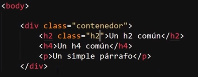
JavaScript
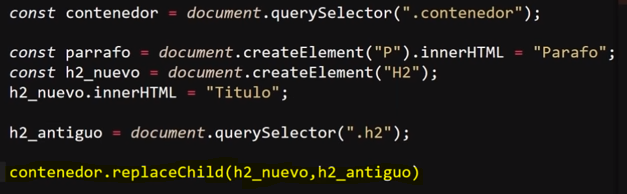
Resultado
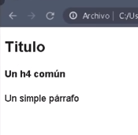
En este ejemplo se selecciona el elemento padre a través de su clase, luego se crean dos elementos usando JavaScript: un párrafo (no se usa) y un h2; a este último se le define el valor "Título". Luego se selecciona el h2 a reemplazar en una variable llamada "h2_antiguo" a través de su clase llamada "h2". Por último, se emplea el método "replaceChild" para reemplazar el "h2" antiguo por el nuevo.
Nota: Recordar que en JavaScript, para manipular elementos HTML, es necesario vincularlos a una variable.
RemoveChild()
-
Este método permite remover un elemento HTML. Su funcionamiento es muy simple: tan solo hay que aplicar este método al elemento padre, indicando la variable vinculada al respectivo elemento a remover dentro de los paréntesis del método.
HTML
JavaScript
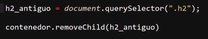
Resultado
HasChildNodes()
-
Este método permite comprobar si un elemento HTML posee o no elementos hijos; por lo cual, este método tan solo retorna valores booleanos: "true" en caso de que el elemento padre sí los posea y "false" en caso de que no tenga ninguno.
HTML
JavaScript
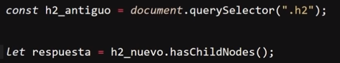
En este ejemplo se selecciona un elemento "h2" a través de su clase, y luego se le aplica el método para comprobar si posee o no elementos hijos, a la vez que se guarda el retorno del método en una variable llamada "respuesta". En este caso, pese a lo que puede aparentar, el resultado retorna en "true", ya que el texto que está contenido dentro del elemento "h2" se trata de elementos de texto; por lo tanto, el texto dentro del "h2" se trata de elementos hijos.
Propiedades de los Elementos Padres
ParentElement y ParentNode
-
Se tratan de dos propiedades casi completamente iguales con la única diferencia de que "parentElement" retorna el elemento HTML padre, mientras que "parentNode" retorna el nodo padre del elemento actual; es decir, la diferencia entre los dos es que una retorna el elemento y otra el nodo.
En la gran mayoría de los casos el efecto de ambos es el mismo; solo en ocasiones muy particulares en las que el elemento hijo esté contenido por un nodo que no pertenezca a un elemento HTML el resultado puede variar. De resto, ambas propiedades suelen arrojar el mismo resultado.
ParentElement
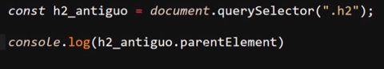
Resultado
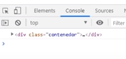
ParentNode
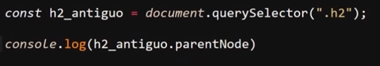
Resultado
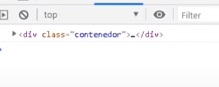
Como se puede ver en el ejemplo, efectivamente el resultado de ambas propiedades es el mismo; solo en ocasiones muy específicas estas propiedades retornarán resultados diferentes.
Elementos Hermanos
Los elementos hermanos se tratan de todos aquellos elementos que estén en el mismo nivel de estructura; por ejemplo, en el caso de dos elementos "p" contenidos dentro de un elemento "article", los dos elementos "p" se consideran elementos hermanos.
A continuación se definen las diferentes propiedades diseñadas para manipularlos. Para ejemplificar adecuadamente estas propiedades, todos los ejemplos de estas partirán del siguiente código HTML:
NextSibling y PreviousSibling
-
Estas dos propiedades retornan el nodo hermano más cercano al elemento: "nextSibling" retorna el siguiente nodo al elemento; por su parte, "previousSibling" retorna el nodo anterior al elemento. Por lo tanto, estas propiedades retornan el nodo anterior y siguiente del elemento.
En la mayoría de los casos ambos retornos serán una lista de nodos de tipo texto, ya que en la mayoría de los casos, al estar el código indentado, los nodos que se encuentran antes y después de los elementos son nodos de texto, ya que estos pertenecen a los espacios y saltos de línea usados para indentar el código.
Para que estas propiedades retornen otro elemento HTML es necesario que las etiquetas de estos no estén separadas por ningún espacio o salto de línea; es decir, se encuentren completamente pegadas a las del elemento hermano.
NextSibling
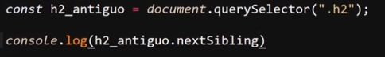
Resultado
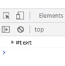
PreviousSibling
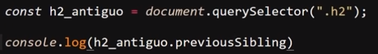
Resultado
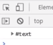
NextElementSibling y PreviousElementSibling
-
Estas propiedades permiten retornar los elementos HTML hermanos más cercanos del elemento actual: "nextElementSibling" retorna el elemento siguiente del actual, mientras que "previousElementSibling" retorna el elemento anterior al actual. Por lo tanto, estas propiedades permiten retornar el elemento anterior y el siguiente al elemento actual.
NextElementSibling
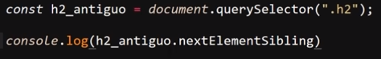
Resultado
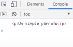
PreviousElementSibling
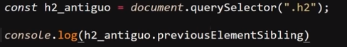
Resultado
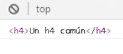
Closest
-
La propiedad se utiliza para encontrar el ancestro más cercano de un elemento en el árbol del DOM que coincida con un selector CSS específico. Si no se encuentra ningún elemento que coincida con el selector, closest devuelve null; es decir, esta propiedad permite retornar el elemento contenedor más cercano en base a una clase definida.
Ejemplo
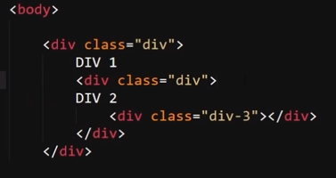
Resultado
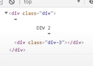